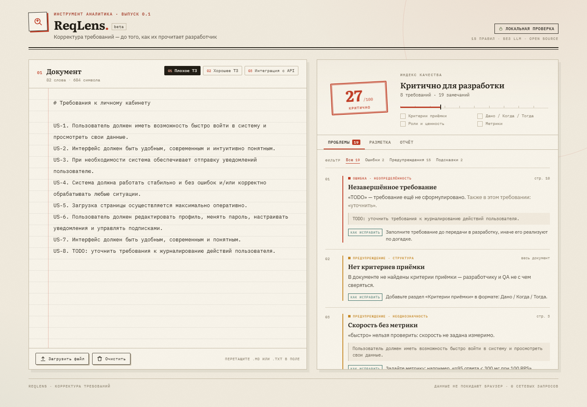

Фрагмент ТЗ · личный кабинет
US-1 Пользователь должен быстро войти в систему.
US-2 Интерфейс должен быть удобным и современным.
US-3 При необходимости отправлять уведомления.
8 требований · 19 замечаний · отчёт готов
Линтер требований · для аналитиков
ReqLens находит неоднозначные формулировки в требованиях до того, как их прочитает разработчик. 15 правил, оценка от 0 до 100 и готовый отчёт для тикета — за пару секунд.
Фрагмент ТЗ · личный кабинет
US-1 Пользователь должен быстро войти в систему.
US-2 Интерфейс должен быть удобным и современным.
US-3 При необходимости отправлять уведомления.
8 требований · 19 замечаний · отчёт готов
01 Почему это больно
«Быстро», «удобно» и «при необходимости» звучат как требования, но не задают поведение. Разработчик трактует их по-своему, QA пишет тест по-своему — расхождение всплывает на демо.
«Система должна работать быстро и без ошибок».
«p95 ответа API — не более 300 мс при 100 RPS. При сетевой ошибке — до 3 повторов с интервалом 10 секунд».
02 Как это работает
Проверка идёт прямо во время набора: без регистрации, без отправки документа на сервер и без языковых моделей. Только правила и понятные рекомендации.
ТЗ, user stories или критерии приёмки. Можно загрузить Word, PDF, Excel, .md или .txt.
Линтер подсветит неоднозначности, нарушения структуры и дубли. Покажет оценку и чек-лист «что уже хорошо».
Отчёт в Markdown, Word, PDF, TXT, HTML, JSON или CSV — для тикета, Confluence или ревью с командой.

03 Что внутри
Правила сгруппированы по смыслу: от слов-оценок до структуры документа. Каждое замечание объясняет проблему и предлагает проверяемую формулировку.
«быстро» · «удобно» · «несколько» · «и т.д.»
Скорость, качество и количество без измеримого критерия.
«при необходимости» · «по возможности» · TODO
Требование, которое можно выполнить, а можно и не выполнять.
«и/или» · два действия в одном пункте
Требования, которые невозможно проверить и оценить по отдельности.
критерии приёмки · роль · метрики
Проверка, что у требований есть критерии, роли и измеримые значения.
пассивный залог · повторные формулировки
Места, где текст скрывает исполнителя или дублирует соседний пункт.
0–100 · чек-лист · отчёт
Оценка, которая помогает понять, готов ли документ к разработке.
Плюс проверка «Дано / Когда / Тогда», ролей, пассивного залога и открытых перечней — всего 15 правил.
Проверка занимает секунды